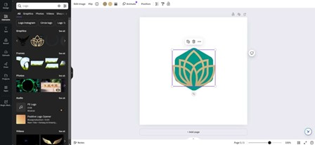
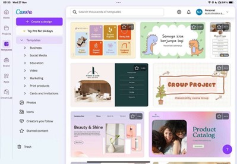
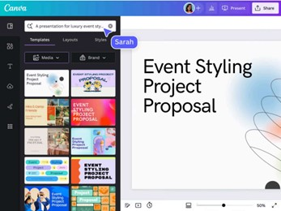
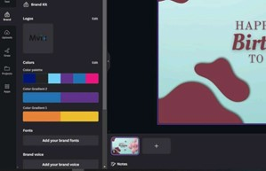
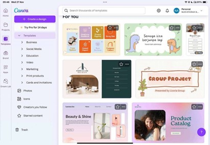
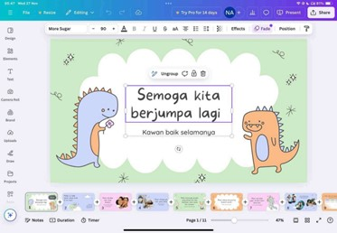
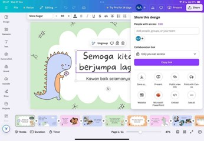

CANVA
WHAT IS CANVA?
Canva is an online design tool developed by Melanie Perkins, Cameron Adams, and Cliff Obrecht (2012) with the aim of simplifying graphic design for those who struggle with the complexities of the subject. The platform makes graphic design accessible to everyone, enabling users to easily create professional-quality designs such as posters, slideshows, images, flyers, resumes, cards, certificates, infographics, and more. Canva provides a space where users can showcase their creativity to the world! So, have you used Canva for any of your projects yet? What do you think about how easy or fun it is to use?
FEATURES OF CANVA
Drag-and-Drop Editor
Canva’s drag-and-drop editor is user-friendly and highly intuitive. It lets users seamlessly position and organize design elements such as text boxes, images, icons, and shapes, simply by dragging them into place. This feature is especially helpful for beginners or those needing to work quickly, as it doesn’t require any prior design knowledge. With just a little creativity and a few clicks, anyone can create professional-looking graphics in no time!
Beautiful Templates
A standout feature of Canva is its extensive collection of pre-designed templates. Whether you are working on social media posts, marketing materials, presentations, business cards, or invitations, Canva provides templates for almost any design need.
These templates are professionally crafted, allowing users to easily customize them with their own text, images, and branding. This makes it simple for anyone, even those with little to no design experience, to produce attractive and effective visuals quickly and effortlesssly.
Extensive Media Collection
Canva features a remarkable library containing millions of photos, illustrations, icons, fonts, and videos to enhance your designs. Whether you’re looking for high-quality stock images, trendy icons, or professional illustrations, Canva offers a wide variety of resources to take your projects to the next level. Many of these assets are available for free, and for those seeking premium content, Canva provides affordable access to even more high-quality options. This comprehensive collection ensures that you have everything you need to find the ideal visuals for any designs all in one space.
Customisable Branding tools
Canva offers powerful branding features that allow you to create a consistent look across all your designs. You can upload your brand's logo, choose specific color palettes, and set preferred fonts to ensure that your designs reflect your brand identity. Canva also has a "Brand Kit" feature, which saves all your branding elements, making it easy to apply them to any new project.
GUIDELINES FOR CANVA
1. Select a Template or Create a Design from Scratch
When you first access Canva, you can choose from a wide variety of pre-made templates or start with a blank canvas. There are templates available for all kinds of projects, including social media graphics, presentations, flyers, resumes, and more
2. Make The Design
After selecting a template, make it your own by modifying the text, colors, fonts, and images. Canva’s user-friendly drag-and-drop editor makes it easy to move elements around and add your personal style to the design.
3. Enhance with Additional Features
Take your design to the next level by adding special effects like animations, grids, and filters. You can adjust text and image effects, use Canva’s alignment tools for a polished layout, and experiment with color schemes to align with your brand or theme.
4. Save or Share Your Creation
Once you feel satisfied with your design, you can download it in formats like PNG, JPEG, or PDF. Alternatively, you can share your work directly on social media or collaborate with others in real-time by inviting them to edit or view the design.
BENEFITS OF CANVA
FOR TEACHER
Develop Engaging Lesson Plans
Canva empowers teachers to craft visually appealing and interactive lesson plans. With customizable templates for various subjects or topics, educators can incorporate images, charts, and illustrations to enhance the content’s dynamism. These lesson plans can be easily updated, reused, or shared with fellow educators, allowing teachers to save time while keeping their lesson structures organized and effective. This approach not only streamlines lesson planning but also makes it more visually captivating for students.
Design Interactive Quizzes and Assignments
Canva enables teachers to create visually attractive and interactive quizzes, assignments, and worksheets. By utilizing a range of templates, educators can develop engaging assessments that feature images, infographics, and creative layouts, making the learning process more enjoyable for students. These custom-designed materials help to avoid the dullness of traditional assignments, keeping students motivated and excited to complete their tasks, while also enriching the overall learning experience.
FOR STUDENTS
Foster Creativity and Visual Communication Abilities
Canva empowers students to unleash their creativity by designing eye-catching projects such as posters, presentations, infographics, and digital artwork. This helps them improve their visual communication skills, enabling them to convey ideas and information in a compelling and clear way. It promotes creative thinking, problem-solving, and visual expression; skills that are valuable in both academic and professional contexts.
Build Digital Literacy and Design Competence
Canva plays a key role in developing digital literacy and design skills that are crucial in today's technology-driven world. By using the platform, students gain proficiency in creating digital content, mastering design tools, and understanding essential design principles like layout, color coordination, and typography. These skills not only enhance academic projects but also equip students with the expertise needed for future careers that demand digital knowledge and creative solutions.
PERSONAL REVIEW
With the existence of Canva, life has definitely become much easier, especially for someone like me who used to rely heavily on PowerPoint for editing presentations. As a university student, I've always found PowerPoint to be a useful tool, but it often felt a bit limiting in terms of design flexibility and visual appeal. The templates were basic, and while it had some design options, they did not allow for the same level of creativity or polish that I was looking for. That is where Canva has been a game-changer. Switching to Canva has made my presentation creation process faster, more efficient, and much more fun. Canva has definitely mada a huge difference in how I approach design, and I honestly can not imagine going back to PowerPoint now~